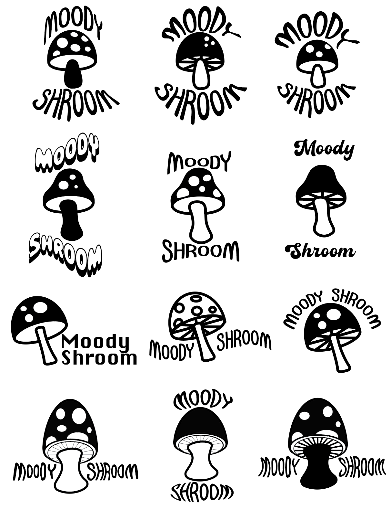

Although originally a student at Virginia Commonwealth University in Richmond, I relocated to Harrisonburg Virginia to attend James Madison University in the fall of 2021. I'm currently a junior pursuing a double degree in both interactive design and creative writing. I'm incredibly passionate about user-centered design and learning how to create intuitive user interfaces; I have experience creating low and high fidelity prototypes, conducting user research, creating personas and sitemaps as well as experience coding with CSS and HTML. As a result of my English studies, I'm a proficient writer and value the importance of effective communication. I'm skilled at learning new concepts quickly and I accredit this to my genuine passion to learn.
I am currently a member of both the National Society of Collegiate Scholars and JMU's Phi Kappa Phi chapter. I've been awarded by VCU, "Exemplar UNIV 112 Student Award" as well as awarded "VCU Strongest Multimodal Award". Lastly, I have been named on JMU's Dean's List for: Fall semester 2021, Spring semester 2022, and named on the President's List for the Fall of 2022.
Applied current editing and photography tools to tell great stories. Researched/ interviewed members of the downtown community and wrote regular blog posts. Took ownership of their online directory and event listings. Worked on: their website, email newsletter, social media, community events, and developed print.
For further information about my work, visit my Wordpress site to view my full portfolio.
Feel free to send any business inquiries to my gmail, generousdani@gmail.com, or reach me by my cell at 571-296-0226.